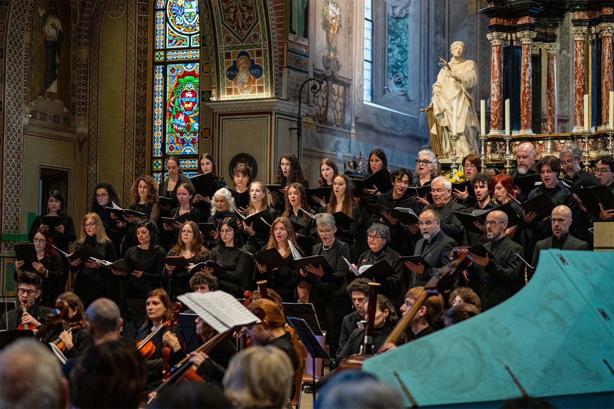
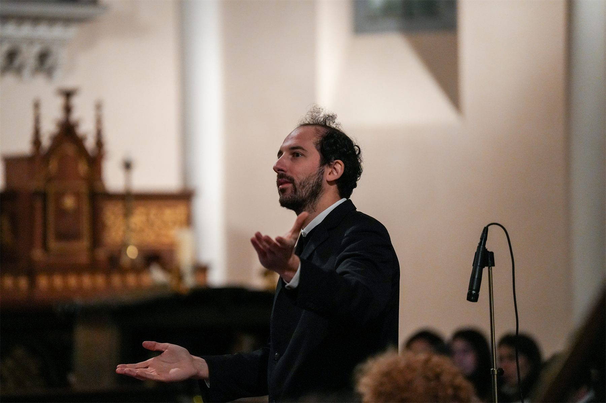

Prossimi concertiConcerto di Natale
BigliettiDate e luoghi
- sab5dicMuraltoCollegiata S. Vittoreore 20:00Offerte libere a favore di Telethon Svizzera
- dom6dicLuganoCattedrale S. Lorenzoore 17:00
- sab12dicChiassoChiesa di S. Vitaleore 20:00
- dom13dicLocarnoCollegiata S. Antonioore 17:00
Programma
- BachOratorio di Natale BWV 248 (parti I e III) · Suite n. 3 BWV 1068: Ouverture e Aria – Fiorenza De Donatis, violino
- De VictoriaO magnum mysterium
- BrucknerAve Maria WAB 6
- GjeiloNorthern Lights
- MagistraliLux fulgebit
- LauridsenO magnum mysterium
Luceat Ensemble · Andrea Pedrazzini, direzione


Gratis fino a 14 anni · Studenti CHF 5.–
Prevendita su eventfrog.ch · Cassa serale un'ora prima
Chi siamo
Luceat è un ensemble vocale e strumentale fondato a Locarno nel 2022 e diretto da Andrea Pedrazzini. Riunisce oltre sessanta musicisti, professionisti e amatori, attorno al grande repertorio sacro: dalla polifonia rinascimentale a Bach, Mendelssohn e Bruckner.
Ogni anno presenta due produzioni, a Natale e a Pasqua, nelle chiese del Ticino. Nel 2026 ha eseguito la Messa in fa minore di Bruckner con il Chœur de l'Université et des Jeunesses Musicales di Friburgo. L'ensemble accoglie e forma anche giovani musicisti, che si esibiscono accanto a professionisti.
Scopri di più
Sostienici
Amici del Luceat
- pPianoCHF 50.–1 ingresso omaggio
- mfMezzoforteCHF 100.–2 ingressi omaggio
- fForteCHF 200.–4 ingressi omaggio e guida all'ascolto con il direttore
- ffFortissimoCHF 500.–6 ingressi, guida all'ascolto e nome nei programmi di sala
- fffMecenateCHF 1'000.–10 ingressi, guida all'ascolto e nome nei programmi di sala come Mecenate
Diventa Amico del LuceatAdesione annuale, da CHF 50.–
Aderisci